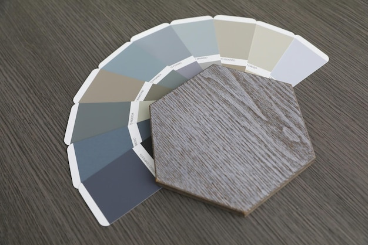

A colour scheme feels timeless when it works with a room’s light, materials and purpose—not simply because it uses neutral paint. Soft whites, muted greens, warm browns and deeper blues can all last well when they sit comfortably alongside the elements that are likely to remain in place.
Before choosing paint, look at the fixed or costly-to-change features: flooring, tiles, worktops, brickwork, fireplaces and large pieces of furniture. Note whether their colours read warm, cool or balanced. A wall colour that looks appealing on a sample card may clash with these features once it is on a larger surface.

Undertones matter. Two whites may appear similar at first glance, but one may lean towards yellow, pink, grey or green. Place samples beside the room’s existing materials and compare them in the space, rather than judging them in isolation.
Natural light changes throughout the day, and its effect depends on the room’s orientation, window size, surrounding buildings and the weather. Artificial lighting also influences how a colour looks after dark.
Instead of relying on a small paint card, apply generous samples to more than one wall. If possible, move sample boards around the room. Look at them in the morning, during the day and in the evening with the lights on. This makes it easier to see whether a colour becomes too cool, too yellow or unexpectedly intense in your particular space.
Consider the finish as well as the colour. Different finishes reflect light differently, so a shade may not look identical on a matt wall and on woodwork with more sheen. Check the product information and test the finish you intend to use.
Choose one or two foundational colours first, then add supporting shades. A useful palette might include a main wall colour, a tone for woodwork or adjoining rooms, and one or two stronger colours for details or furnishings. The aim is to create relationships between colours, not to use every shade you like in the same room.
Look for a shared quality among your choices: similar warmth, softness or depth. Colours do not need to match exactly, but they should feel compatible when viewed together. A simple way to check is to place the samples side by side with flooring and fabric swatches.
When rooms connect visually, consider how the colours will look from one space into another. A consistent undertone or a repeated accent can provide continuity without making every room identical.
Think about how you use the space and the atmosphere you want it to support. A bedroom might call for a quieter, more enveloping palette; a kitchen or study may suit clearer contrast. These are starting points rather than rules: the right choice depends on the room, its light and your preferences.
Deeper colours can feel composed and lasting when balanced with suitable lighting, materials and lighter elements. Pale colours can feel fresh, but they are not automatically easier to live with or more enduring. Choose a shade for how it works in the room, rather than assuming a particular colour family is always timeless.
A restrained palette does not have to be colourless. Consider a richer shade on a smaller area, such as a door, alcove, shelving or piece of furniture. Repeating that colour in a cushion, artwork or another detail can help it feel connected to the wider scheme.
If you are drawn to a bold colour, test it at the scale and location where you plan to use it. A colour that works well as a small accent may feel very different across all four walls.
Before committing, review your samples alongside the materials and furnishings that will stay. Check them under both natural and artificial light, and give yourself time to notice how they feel at different points in the day.
A timeless choice is not necessarily the safest or palest one. It is a colour that suits the room, works with its lasting features and continues to feel right after the initial excitement of choosing it has passed.
This website may use essential technologies to support basic functionality and may collect information you choose to submit through the contact form. Please review the Privacy Policy for details about data handling, your choices and how to make an enquiry. Read the Privacy Policy